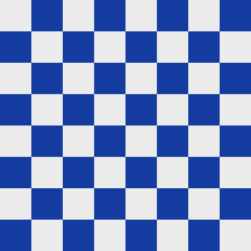
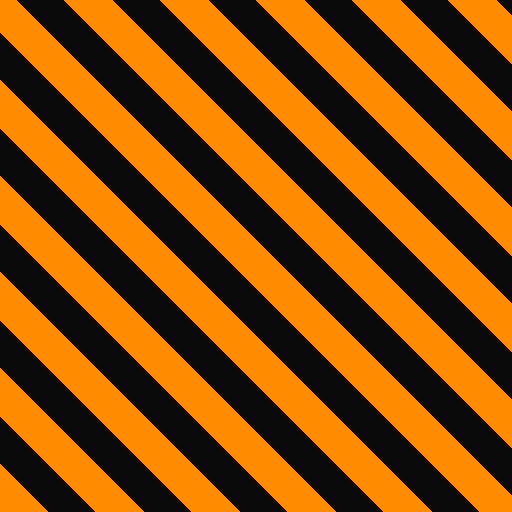

Part 04 · Simulation
A physics sandbox for a fly brain
Before a spiking circuit got anywhere near a real propeller, it flew in PyBullet, over and over. This page describes the simulated drone, the flight controller we wrote for it, and the obstacle course built for optic flow.
4.1Why simulate?
Tuning a spiking controller means many failures: escapes that fire during ordinary cruising, dodges into walls, oscillating turns. In simulation each failure costs a keypress (R resets). A simulator also gives what the Tello cannot: ground-truth position and obstacle distances, deterministic scenarios, and headless batch runs.
We use PyBullet[1], running rigid-body physics at 240 Hz with the drone's decision loop at 30 Hz, once every 8 physics steps. That matches the real drone's control rate.
4.2The drone body
The simulated quadcopter is deliberately simple: one 1 kg box (0.30 × 0.30 × 0.08 m) with linear and angular damping of 0.3. Thrust and torques are applied directly to the body's centre of mass.
Design decision · no rotor links. An earlier version modelled the four rotors as separate linked bodies, which destabilised the physics solver. We are testing the brain, not rotor aerodynamics, so a single rigid body with applied force and torque gives the right flight behaviour with none of that instability.
4.3Flight controller: a PID cascade
The Tello's firmware stabilises itself. In simulation we had to write that layer ourselves. We used the same shape a real flight controller uses:
PyBulletDrone. To move forward, a quadcopter pitches its nose down and lets thrust do the rest, so the outer loop's output is an angle, not a force.The outer loop maps velocity error to a target tilt, \(\theta^\ast = \operatorname{clip}(K_v\,(v^\ast - v),\ \pm\theta_{max})\). The inner loop is a PD controller on that angle:
| Limit | Value |
|---|---|
| Altitude floor / cruise / ceiling | 0.5 / 1.5 / 3.0 m |
| Max horizontal speed | 2.0 m/s |
| Max yaw rate | 1.5 rad/s |
| Max tilt | 0.45 rad (≈ 26°) |
Lesson learned · tilt limits top speed. The tilt cap was originally 0.30 rad, and the drone physically could not exceed about 1.0 m/s, whatever speed was commanded. More tilt means more of the thrust vector points horizontally. Raising the cap to 0.45 rad unlocked the 2.0 m/s escape strafe. Similarly, a yaw gain of 0.03 took a full second to spin up, and 0.22 made turns responsive.
4.4Camera
A forward camera attached to the body renders 320×240 frames with a 75° field of view using PyBullet's software renderer, at about 5 ms per frame. That is the same resolution the Tello's video is downsampled to, so the optic-flow and looming code runs unchanged on both.
4.5The course
The test course is a straight corridor with three obstacle types and a goal line at \(x = 16\) m:
simulation/environment.py, to scale. The dashed soft bounds (x ∈ [−3, 19], y pulled 0.9 m in from the walls) trigger a return-to-area behaviour, not a crash.Design decision · everything is striped. Optic flow tracks pixel-level gradients, and a flat-coloured wall gives it almost nothing to work with. Every obstacle uses a high-contrast stripe texture, and the floor is a checkerboard, so that the looming signal in simulation behaves like it does against real, textured surfaces.


TODO Add a screenshot or GIF of the PyBullet GUI during an escape.
4.6Physics safety net
Independent of any controller, the simulated drone uses true physics distances to enforce a last line of defence. Within a ±70° cone around the nose:
- obstacle closer than 0.6 m → forward speed capped at 0
- obstacle closer than 0.3 m → forced 0.25 m/s retreat
The cone came from a debugging session. The first version used the nearest obstacle in any direction, so a wall merely alongside the drone froze it mid-corridor.
4.7Running the brain in the loop
main.py wires everything together: environment, drone, camera, looming detector, fly-brain controller and safety layer. The GUI supports interactive testing:
| Input | Action |
|---|---|
| Left-click | Launch a block at the drone, the standard escape test |
| Space | Emergency hover |
| L | Land |
| R | Reset |
| M | Toggle autonomous / manual |
In neuron test mode the drone hovers in place unless the brain triggers ESCAPE. This isolates the escape reflex from cruising and avoidance behaviour.
# main venv: pybullet, numpy, opencv-python, djitellopy
python main.py
# the brain subprocess runs in a separate conda env with brian2 (see Fly-Brain/environment.yml)4.8Evaluation harness
evaluation/run_trials.py runs headless trials and metrics.py scores them on:
- distance travelled down the course
- collisions and emergency stops
- avoidance success: whether the drone cleared an obstacle within a 1.5 s window
The harness currently drives the hand-written reflex baseline (ReflexController). Pointing it at the fly-brain controller for a direct brain-versus-baseline comparison is the next step.
TODO Batch results table: fly brain vs reflex baseline, over N seeds.
Two development results are recorded in code comments and tests:
| Experiment | Result | Source |
|---|---|---|
| Escape: sideways only vs sideways + back-off | Hit by a second box in 3/3 vs 0/3 runs | controllers/flybrain_controller.py |
| Back-off speed 1.0 vs 2.0 m/s | Miss distance 0.12 m → 0.42 m | controllers/flybrain_controller.py |
| Step response, sideways | ≈ 0.6 m in ≈ 1 s | Testing/drone_step_response.py |
Development runs with small n. Indicative only.
4.9Sim-to-real
Because both drones implement DroneInterface, the brain moved to hardware by swapping one class. The differences that mattered in practice:
| Aspect | Simulation | Real Tello |
|---|---|---|
| Field of view | 75° (rendered) | ≈ 55.6° vertical |
| Image | Clean, sharp textures | Compression, blur, lighting changes |
| Dynamics | Coasts under damping | Firmware brakes quickly |
| Position | Ground truth | Dead-reckoned |
| Proximity net | Physics ray distances | None |
The result: in a 60 s real flight the same controller produced 19 escape events, detailed on the neural pathways page.
RReferences
- Coumans, E. & Bai, Y. PyBullet, a Python module for physics simulation for games, robotics and machine learning. (2016–). pybullet.org